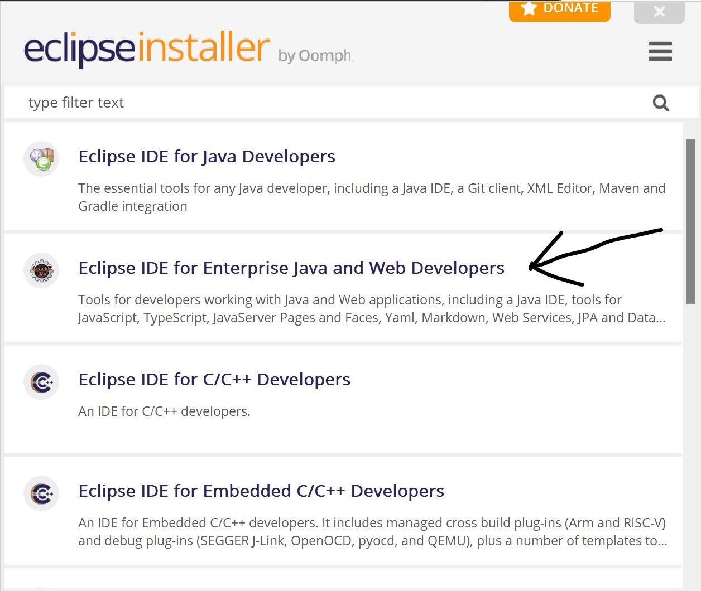
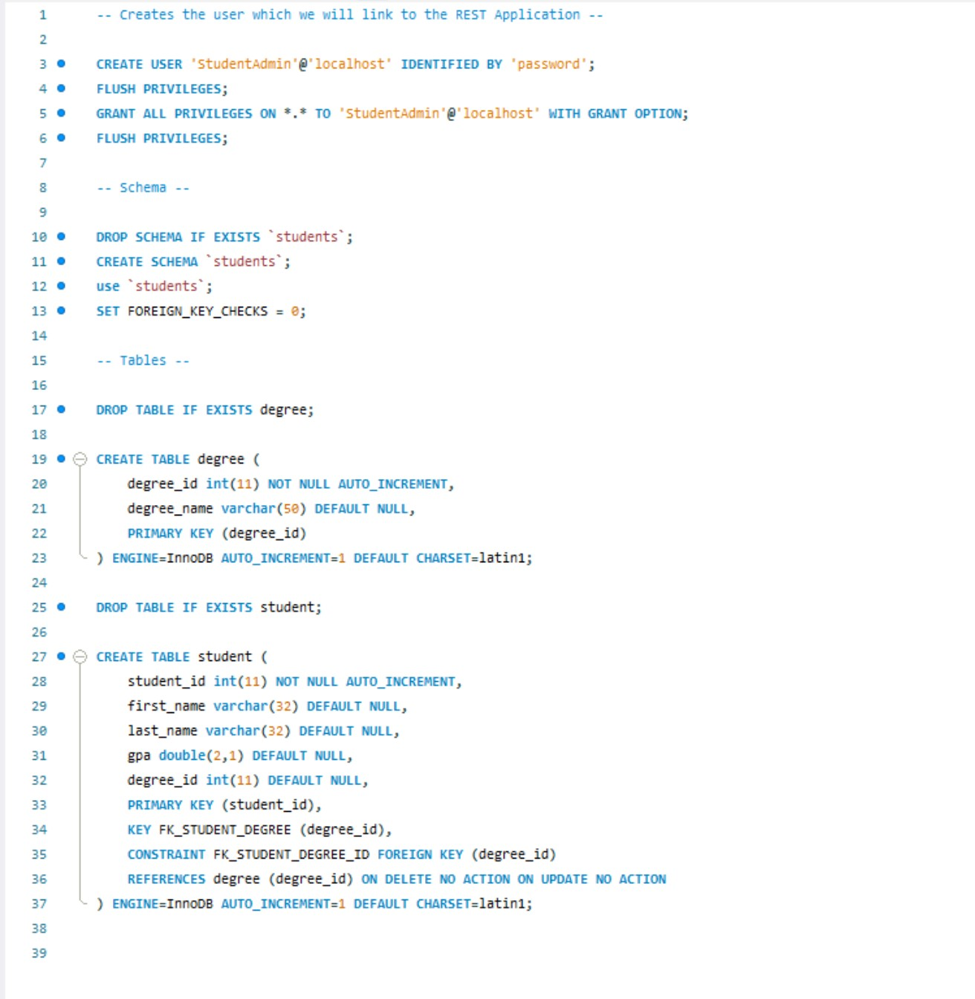
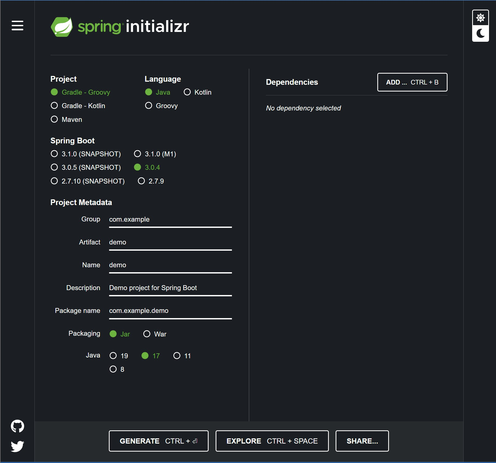
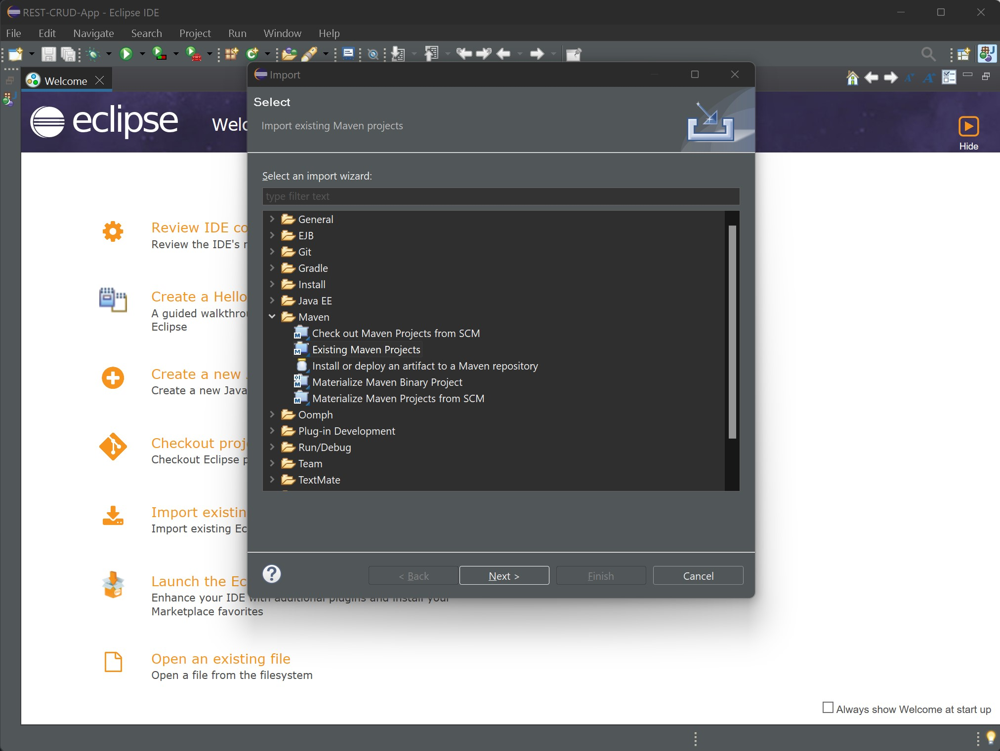
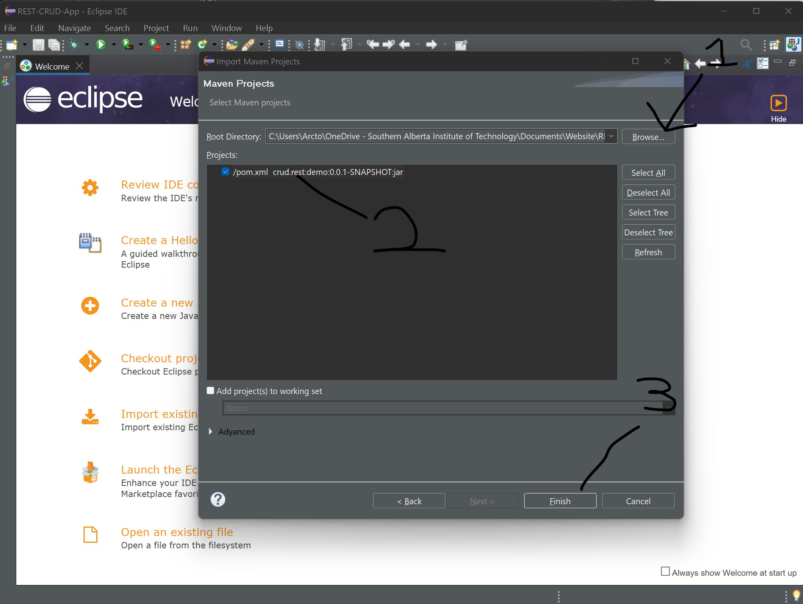
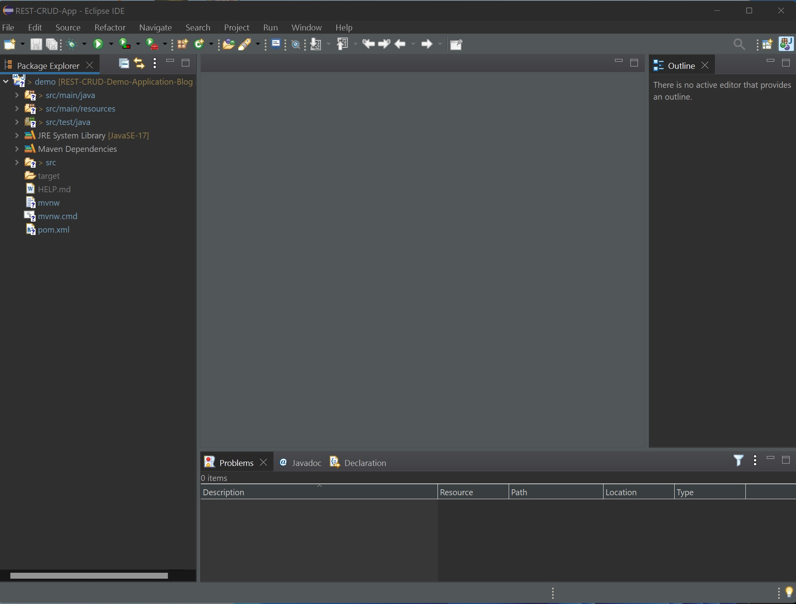

The Setup
We need to start with the required tools to getting the application setup.
IDE Enviroment
Firstly we are going to need an IDE, you can use any IDE such as Netbeans or Eclipse.
For this demo I will be using eclipse. Click this link for help with installing Eclipse. Don't create any projects, just get to the step before you create a project. Ensure you install the Java EE Edition (This is a Java IDE more catered for web development).
 Java EE EditionDatabase Enviroment
Secondly we will need a way to persit the data. For this demo we will use MySQL as the database.
Click this for help with installing MySQL. Use the Developer Default Settings.
Once you have completed the installation, download this script file and run it inside the MySQL Workbench application with your root login.
It will create a user for the MySQL data, with the username StudentAdmin (password = password of course, because its the most secure password known to man).
Then the script will create a few tables, which I will go into more depth with later. After the tables have been created it will enter some dummy data to get us started.
MySQL is very similar to Oracle, so I won't go into the details on the differences but click here for more details on MySQL (including the differences from Oracle).
 Demo MySQL ScriptDownloading the Spring Boot Starter Project
Lastly we will configure the project and download the project initializr files
Go to this website to configurate the starter project.
 Default Configurate Page Spring BootSteps:
- Project - Maven
- Language - Java
- Spring Boot - 3.0.4 (Any Current Version that isn't SNAPSHOT will do)
- Packaging - Jar (Allows us to package the application up into a runnable Jar file)
- Java Version - 17
-
Dependencies -
- Spring Web (Embedded webserver and REST Controller) - Required
- Spring Boot DevTools (Mainly for LiveReload and fast restarts when making changes) - Not Required
- MySQL Driver (Established the connection to the database) - Required
- Spring Data JPA (Interaction with the database) - Required
Click generate to download initalizr project. Click here to download initalizr project if you don't want to generate your own.
Import the Maven Project
The final step for the setup is to just import the project.
Go to File > Import > Maven > Existing Maven Project.
 First Steps to ImportingSelect the location of the Maven Folder > Select the POM.xml file > Finish Button.
 Second Steps to ImportingWait till the project has finished importing and you have successfully imported the project.
 Successfully Imported Project